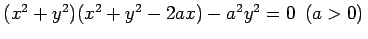

Inhalt Index DeskTop Bronstein
Funktionen und ihre Darstellung
Eine ebene Kurve heißt algebraische Kurve der Ordnung n, wenn sie durch eine Polynomgleichung der Form F(x,y) =0 in zwei Variablen vom Gesamtgrad n beschrieben werden kann.
Die Kardioide mit der Gleichung , ist eine Kurve 4. Ordnung.